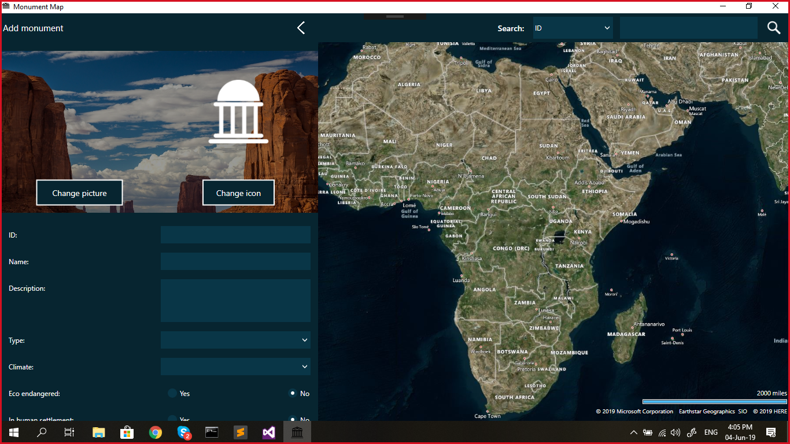

Adding a new monument
Adding a new monument basically consists from the following three steps
- Clicking on the add new monument icon
- Filling out data regarding the new monument
- Saving the monument
Click on the add new monument icon
Adding a new monument starts by clicking on the following icon: The icon is located in the upper left corner of the window. If you are feeling a little lazy, you could always use the "CTRL + N" shortcut to perform the same thing. Once the icon has been clicked you move on to the next step.
Filling out data regarding the new monument
After clicking the icon the following dialog will pop up:

You need to fill out all the inputs, all of them are required. Scroll down in order to fill out the rest.
You can even choose a picture to be assigned to this monument, and an icon which will be placed on the map.
Each monument type has it's default icon, unless you choose to upload your own. If you haven't added a type yet,
you can always use the "No_type" by default, and change it later on when editing a monument.
As for monuments tags, you are able to choose a default tag, and afterwards, you can choose the ones you added.
Saving the monument
After filling out all the fields, you can click on the "Add monument" button
The monument is then saved, and displayed in "Your monuments" section.
From there you can view it's data, drag it to the map, edit it or even delete it.